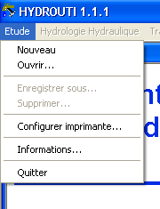
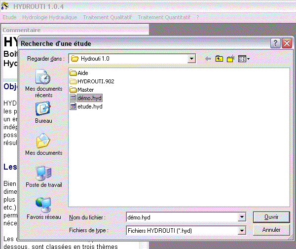

HYDROUTI constitue une boite à outils pour les projeteurs en assainissement. Il comporte un ensemble de modules de calcul quasi-indépendants, dans la mesure où il est possible de faire appel à des données ou résultats d'autres modules.
Bien qu'ayant pour objectif une aide au dimensionnement des ouvrages spéciaux les plus courants (bassin de rétention, dé-versoirs, etc.), la boîte à outils dispose de modules permettant le calcul des données « amont » nécessaires.
Les différentes fonctionnalités, présentées ci-dessous, sont classées en trois thèmes principaux :
Hydrologie, hydraulique
Calcul des débits d'un bassin versant.
Calcul d'un écoulement en chute.
Calcul d'un écoulement en siphon.
Calcul d'une station de pompage (nouveauté version 1.1)
Calcul d'un écoulement dans une canalisation circulaire
Traitement qualitatif
Calcul de déversoir d'orage sur réseau unitaire (à crête haute)
Calcul de déversoir d'orage à ouverture de radier (nouveauté version 1.1)
Calcul de bassin de dessablement ou décantation.
Calcul de bassin de stockage restitution.
Traitement quantitatif
Calcul de bassin de rétention d'eau pluviale.
La structure de l'outil est conçue pour gérer l'ensemble des calculs relatifs à un même projet ou étude. Toutes les informations sont stockées dans un fichier unique présentant une extension ".hyd". L'accès aux différents modules de calcul est activé dès que l'utilisateur a créé une nouvelle étude (option Nouveau du menu Étude) ou a ouvert une étude existante (option Ouvrir du menu Étude).

Pour basculer vers les différents modules, il suffit de naviguer dans les trois menus qui représentent les différents thèmes, et de cliquer sur son choix.
A l'intérieur de chacun des modules, il est possible d'enregistrer son travail, qui sera alors contenu dans le fichier "dossier" (fichier d'extension ".hyd").
Les travaux enregistrés pourront être chargés, en choisissant l'option Ouvrir du menu du module correspondant. Il apparaît une fenêtre où l'on peut sélectionner le travail que l'on souhaite ouvrir.
Il est également possible d'ouvrir un travail ayant été enregistré dans un dossier différent du dossier courant. Pour cela, il faut choisir l'option Autre étude afin de sélectionner le dossier souhaité.
Dans chaque module, une option imprimer est disponible dans le menu.
On peut alors :
soit imprimer une fiche de résultats,
soit enregistrer cette fiche dans un fichier d'extension ".doc" au format Microsoft Word (si ce logiciel est présent sur le poste de travail),
soit enregistrer cette fiche dans un fichier d'extension ".odt" au format OpenOffice (la présence d'OpenOffice sur le poste n'est pas nécessaire).
Pour chaque module, une fiche de présentation des résultats est prédéfinie. Il est cependant possible de modifier le nom du service ou de l'entreprise, qui apparaît dans l'en-tête des fiches. Pour cela, il faut cliquer sur l'option Informations dans le menu Étude du module général d'Hydrouti, et saisir les données souhaitées.
Une des particularités de ce logiciel est la présence permanente et dynamique d'une aide.
| Astuce | |
|---|---|
Dans la nouvelle version 1.1 cette aide est désormais au format « HTML ». |
En effet, celle-ci est permanente, puisqu'elle se trouve dans une fenêtre de taille ajustable (fenêtre « Aide »), mais permanente.
Cette aide est composée de 2 parties :
l'aspect théorique, affiché par défaut ou en appuyant sur la touche F1,
les exemples d'utilisations, accessible par la touche F2.
| Astuce | |
|---|---|
L'intégralité de l'aide est stocké dans le sous-dossier « html » du répertoire d'installation de Hydrouti 1.1. Il est possible de la consulter indépendamment du logiciel en cliquant sur la page « index.html ». |
Cette aide est de plus dynamique, puisqu'au moindre « click » sur un champ ou titre, la partie adéquate de l'aide est automatique-ment présentée dans la fenêtre « Aide ».
Par exemple, dans le module Bassin versant, lorsqu'on clique sur « Méthode de l'hydrogramme » ou sur-le-champ correspondant (cf. figure suivante : les flèches rouges), la partie « Méthode de l'hydrogramme » de l'aide est automatiquement présentée dans la fenêtre « Aide » (cf. figure suivante : la flèche rouge).
Afin de faciliter la prise en main du logiciel et de donner un aperçu de ses capacités, il est possible de consulter un exemple d'étude : « Démo.hyd ». Pour chaque module, il existe au moins un exemple.
Cet exemple d'étude est associé au guide de l'utilisateur, où quasiment l'ensemble des étapes des calculs effectués par Hydrouti sont présentées et expliquées. Ce sont des aides supplémentaires à la compréhension du logiciel. Comme pour n'importe quel outil informatique, il est très important de comprendre les calculs effectués par celui-ci tant que possible, afin d'optimiser son utilisation.
Pour consulter cet exemple d'étude, il suffit, lorsqu'on est dans le module principal, de cliquer sur Ouvrir dans le menu Etude. Il faut ensuite double-cliquer sur « Démo.hyd » ou sélectionner « Démo.hyd » puis valider en appuyant sur le bouton « OK ».
